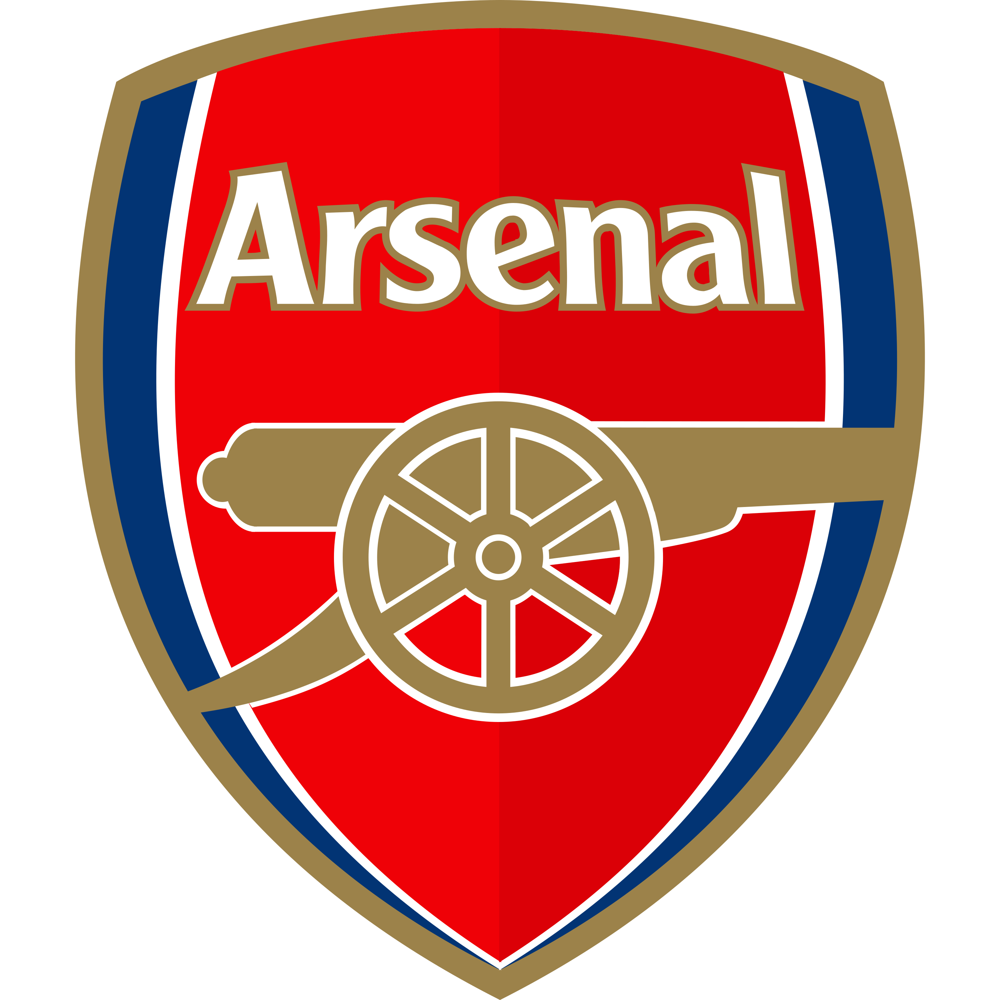
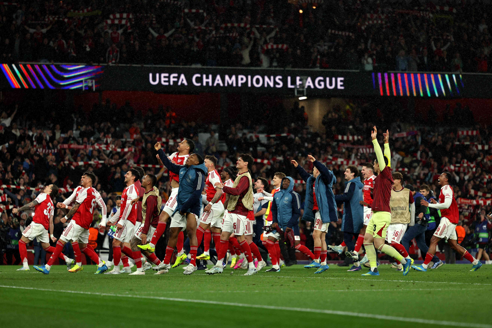
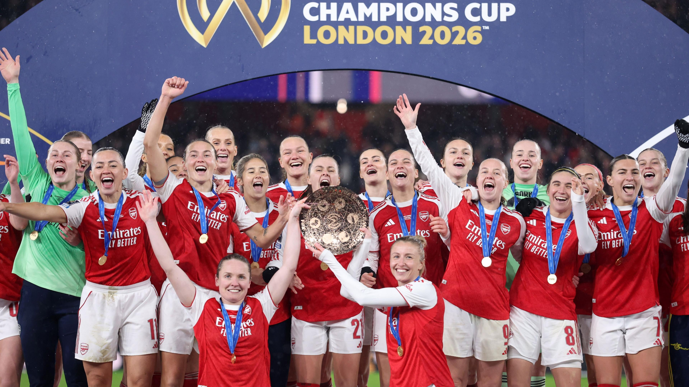
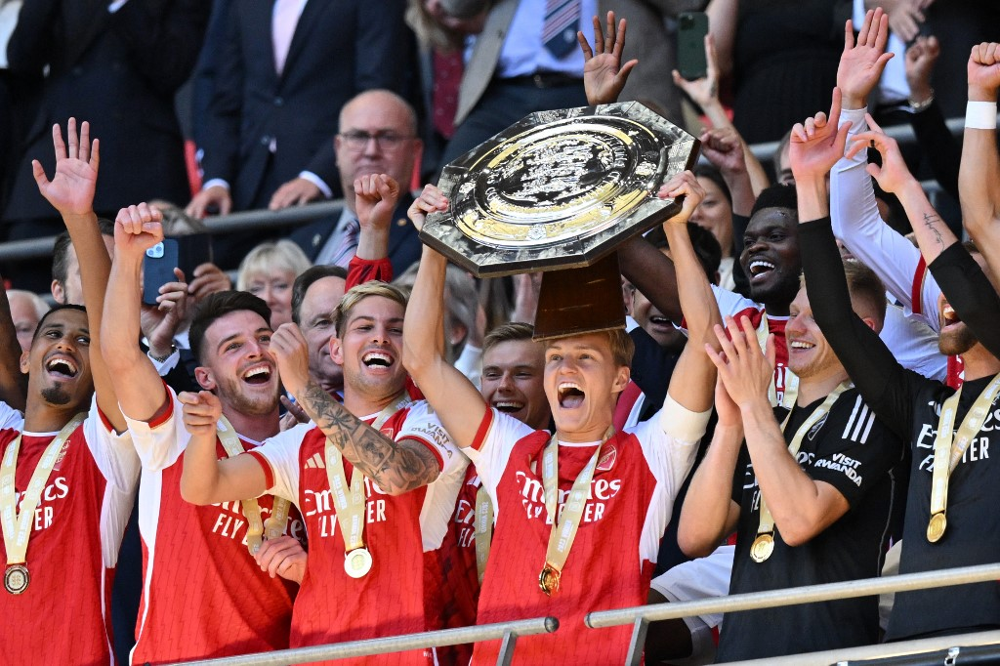
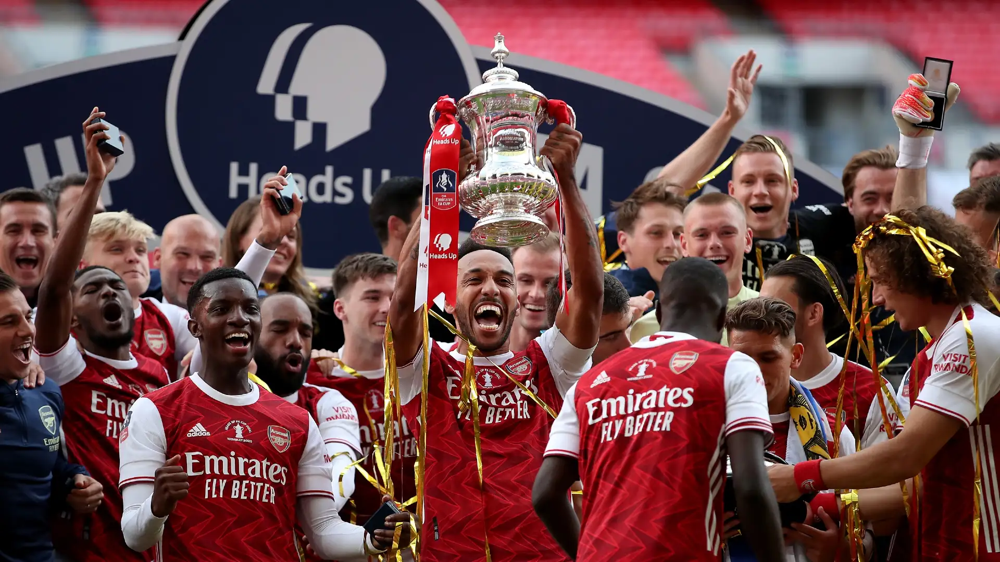
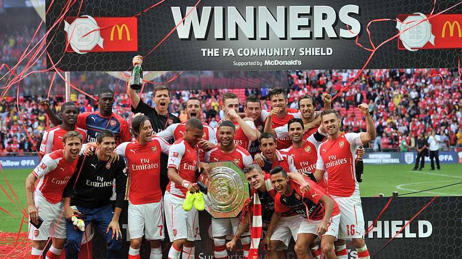
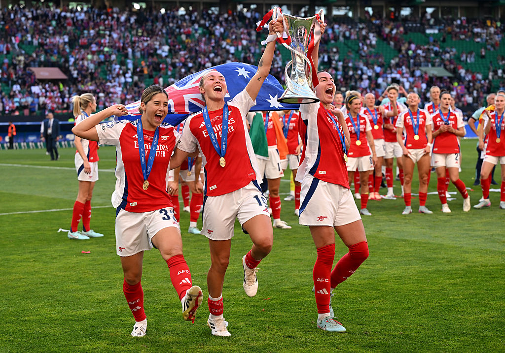

Arsenal Football Club was founded in 1886 by workers at the Royal Arsenal in Woolwich, London. The club was originally known as Dial Square before becoming Royal Arsenal and eventually Arsenal Football Club.
In 1913, Arsenal moved from South London to Highbury in North London. The club spent more than 90 years at Highbury before moving to the Emirates Stadium in 2006, which remains the club's home today.
Throughout its history, Arsenal has become one of the most successful clubs in English football. The club has won numerous domestic trophies and is known for its attacking style, iconic players and passionate supporters.


Arsenal has a long history of success in English football, with important achievements in both domestic and international competitions.




Arsenal have won the English top-flight title multiple times. The club's most famous league campaign came in the 2003–04 season, when the team completed the entire league campaign without losing a match.
Arsenal are one of the most successful clubs in FA Cup history. The competition has played an important role in the club's history, producing many memorable finals and iconic moments..
The 2003–04 Arsenal team became known as "The Invincibles" after going unbeaten throughout the entire Premier League season. Led by manager Arsène Wenger, the team played 38 league matches without suffering a defeat.
Arsenal Women have also played an important role in the club's history. The team has won major domestic and European trophies and has helped build Arsenal's reputation as one of the leading clubs in women's football.